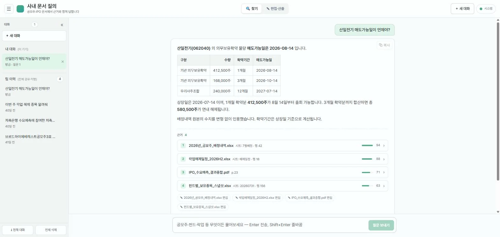
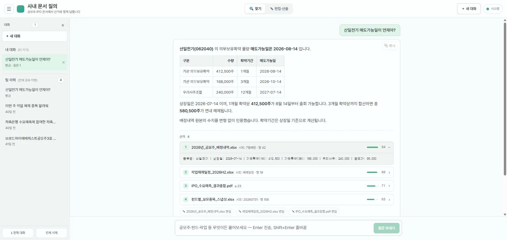
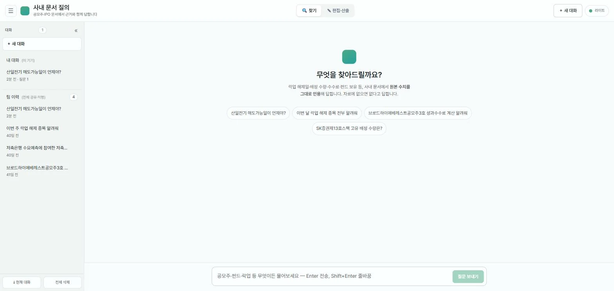
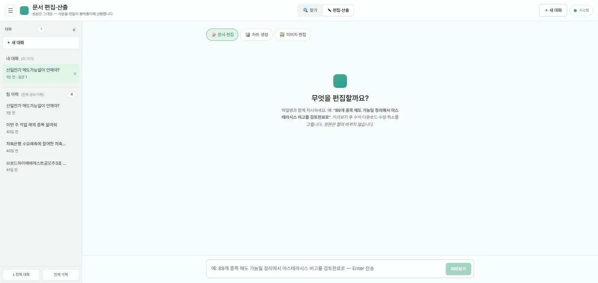
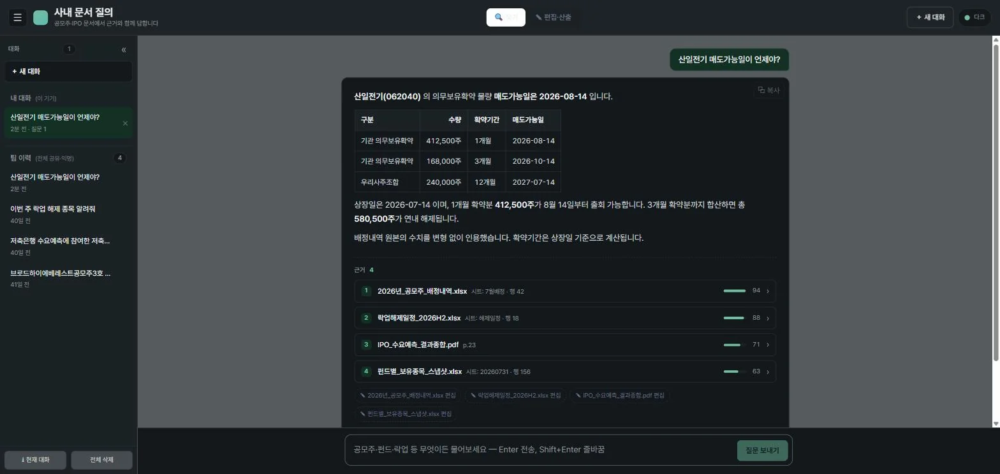

파싱
확장자별 디스패치. 병합 셀 forward-fill로 값과 행을 붙들고, 수치·단위는 변형하지 않는다.
xlsx · pdf · hwp · docx · pptx · csv · 이미지공모주·IPO 업무 문서(락업 해제일·배정내역·펀드 보유·거래내역)에 자연어로 물으면 원본 수치를 변형 없이 인용해 답하는 사내 시스템입니다. 금융 문서 QA에서 신뢰의 핵심은 답이 아니라 그 수치가 어느 문서·시트의 어느 행에서 왔는가이므로, 근거 출처를 각주가 아니라 1급 요소로 승격했습니다.
일반 챗봇의 그럴듯한 답변은 금융 실무에서 쓸 수 없습니다. 락업 해제일을 하루라도 틀리면 매도 시점이 어긋나고, 배정 수량을 반올림하면 정산이 깨집니다. 그래서 이 시스템의 설계 목표는 "잘 답하기"가 아니라 "틀리게 답하지 않기"였습니다.
제공된 자료에서 확인되지 않습니다판단 폭이 좁은 단계(재작성·재순위)는 저비용 모델로 고정하고, 생성에만 상위 모델을 씁니다. 임베딩과 벡터 검색은 asia-northeast3(서울)에 두어 고객 금융 데이터가 국내를 벗어나지 않게 했습니다.
확장자별 디스패치. 병합 셀 forward-fill로 값과 행을 붙들고, 수치·단위는 변형하지 않는다.
xlsx · pdf · hwp · docx · pptx · csv · 이미지표를 행 중간에서 자르지 않고, 헤더를 청크마다 반복해 넣는다. 헤더 없는 조각은 해석 불가능한 숫자가 된다.
MAX_CHUNK_CHARS 2,600사본·구버전이 검색을 오염시킨다. MinHash로 근접중복 파일쌍을 접고 최신본만 남긴다.
MinHash 128 perm · eq 0.90질의와 문서에 비대칭 task_type을 적용하고 병렬 호출한다. 로컬·프로덕션이 같은 모델을 공유해 벡터가 호환된다.
text-multilingual-embedding-002 · 768d벡터(의미)와 BM25(종목명·펀드명 정확 매칭)를 RRF로 융합한 뒤 ACL 필터와 Time Decay를 얹는다.
RRF k=60 · λ 0.3 · τ 365일넓게 회수한 후보 40건을 질의 관련도로 정밀 재정렬한다. 저비용 모델 고정 구간.
gemini-3.1-flash-lite수치 충실 프롬프트로 답을 만들고, 생성된 답의 수치·날짜·이름을 근거와 다시 대조해 교정한다.
gemini-3.5-flash · verify화면당 시그니처는 하나입니다 — 근거 출처 카드. 파일명·시트·행·관련도를 드러내고, 펼치면 그 수치가 실제로 적혀 있던 원본 행이 그대로 나옵니다. 나머지 UI는 조용히 물러나 데이터가 주인공이 되게 했습니다.

tabular-nums로 세로 정렬됩니다.
근거 4건에는 각각 파일명·시트·행 번호와 관련도 막대가 붙습니다.
하단의 ✎ 편집 칩은 검색에서 편집 탭으로 넘어가는 브리지로, 근거 파일을 그대로 편집 대상에 고정합니다.




화면에 대한 고지 — 위 캡처는 저장소의 실제 프런트엔드(React 18 · Vite)를 로컬에서 구동해 찍은 것으로, 컴포넌트·CSS·디자인 토큰은 운영 코드 그대로입니다. 다만 백엔드는 사내 GCP 자격증명과 실제 고객 문서가 필요해 이 환경에서 구동할 수 없으므로, 질의 응답 내용과 파일명·수치는 API 계약에 맞춘 시연용 샘플입니다. 실제 사내 데이터가 아닙니다.
아래 네 건은 모두 완화책을 먼저 넣어본 뒤, 그것이 증상 가리기임을 확인하고 구조를 바꾼 사례입니다.
야간 동기화 때마다 550~830청크가 재임베딩되고 orphan이 생겼다 사라졌다를 반복했습니다. 문서를 아무도 수정하지 않은 날에도 그랬고, 수렴하지 않았습니다.
계측 커밋을 먼저 넣어 소스별 집계와 old/new 텍스트 diff를 뽑았습니다. 범인은 한 시트의 라이브 주가 컬럼이었습니다 — GOOGLEFINANCE와 웹스크래핑 수식이 매 export마다 재계산되며 값만 바뀌어 시트 전체 청크의 해시가 갈렸습니다. 자동 재계산은 Drive modifiedTime을 올리지 않습니다.
modifiedTime 게이트를 넣어, 미변경 파일은 재파싱 대신 BigQuery의 기존 청크를 재사용하게 했습니다. 재파싱·재임베딩 0. 다만 게이트는 데이터 손실 위험을 만들므로 안전장치를 함께 넣었습니다 — 트립와이어 분모를 활성 청크로 한정하고, orphan 삭제 스코프를 활성 파일로 좁히고, 동결된 파일에 자격증명 컬럼이 있으면 강제로 재파싱해 보안 가드가 자가치유되게 했습니다.
"홀딩" 관련 질의를 하면 파생 문서만 걸리고, 그 수치가 실제로 계산된 원천 문서(배정내역·명세부)가 top-K에 들어오지 않았습니다.
도메인 동의어군(홀딩 ↔ 배정내역 ↔ 명세부)을 기본값에 넣어 급한 불은 껐습니다. 하지만 이건 어휘를 손으로 이어 붙인 것이라, 새 파생 관계가 생길 때마다 사람이 등록해야 합니다. 검색이 문서 사이의 관계를 모른다는 사실은 그대로였습니다.
xlsx 수식에서 파생 관계를 추출했습니다. 크로스시트 참조, 크로스파일 [1] 참조, IMPORTRANGE를 파싱해 (참조하는 문서 → 참조되는 문서) 엣지를 인제스트 시점에 사전계산하고, 검색 시 상위 소스의 원천 문서를 재순위 후보창의 꼬리에 주입합니다. 후보 수는 그대로라 재순위 지연 증가는 0이고, 킬스위치를 끄면 완전 no-op입니다.
업무 문서에는 비밀번호·보안카드·계좌번호가 섞여 있습니다. 이미지 2,262장을 일괄 OCR하기로 한 시점에, 텍스트화된 자격증명이 여러 저장 계층에 평문으로 남게 된다는 게 드러났습니다.
최종 청크에는 레닥션이 걸려 있었지만 OCR 캐시에는 약한 마스킹만 적용돼 이미지 안의 비밀번호가 BigQuery에 그대로 상주했습니다. 편집 감사 로그도 값 단위 레닥션만으로는 컬럼 전체가 자격증명인 경우를 잡지 못했습니다.
① 자격증명 파일은 색인 자체를 제외, ② 청크 텍스트 레닥션, ③ OCR 캐시도 같은 레닥션으로 승격, ④ 감사 로그는 값이 아니라 컬럼명으로 게이트. 채팅 스크린샷 다수는 OCR 후 내용 기준으로 제외했고, 배포 전 BigQuery를 감사해 자격증명 컬럼 잔존 0/14,662를 확인했습니다.
모델·프롬프트·검색 파라미터를 바꾸면 어제까지 맞던 답이 조용히 틀려질 수 있습니다. RAG는 회귀가 눈에 안 보이는 시스템입니다.
채점을 LLM에 맡기면 판정 자체가 흔들려 테스트가 flaky해집니다. 대신 생성 규칙 중 결정적으로 검사 가능한 것만 골랐습니다 — "날짜는 원본 그대로"는 정규식으로 확인할 수 있습니다.
운영 질의 로그에서 사람이 검증한 정답을 골든셋으로 동결하고, 변경 후 파이프라인을 재실행해 핵심 날짜·수치가 보존되는지 검사합니다. 날짜 커버리지 100%가 하드 게이트, 수치는 90%. 테이블은 append-only로 두어 스트리밍 버퍼 DML 제약을 피했고, 하네스는 Cloud Run Job으로 분리해 스케줄 실행합니다.
서비스 계정 키 파일을 만들지 않았습니다. 프로덕션 자격은 Cloud Run 런타임 서비스 계정이고, SMTP 같은 외부 자격만 Secret Manager에서 런타임에 가져옵니다 — 코드·이미지·환경변수 어디에도 비밀이 없습니다.
2026년 7월 8일 첫 커밋부터 7월 16일까지 9일간, 설계·구현·배포를 혼자 수행했습니다.
본문 수치는 저장소에서 직접 계측한 값입니다. 코드 규모는 소스 집계(생성 파일 package-lock.json 제외), 파이프라인 파라미터와 모델명은 config.py·cloud/deploy.md 기준입니다 — 저장소 README.md에는 이전 세대 모델명이 남아 있어, 코드를 진실의 원천으로 삼았습니다. 색인 청크 수와 OCR 처리량은 운영 로그에 기록된 실측치입니다. 저장소는 사내 자료를 다루므로 private이며, 코드 열람이 필요하시면 이메일로 요청해 주세요.